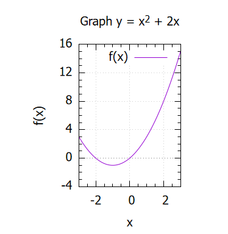

2-1. グラフエリア
このセクションでは、グラフを描画する領域のデザインについて紹介する。
setコマンド
グラフエリアの見た目は主にsetコマンドにより設定できる。 これらの命令はplotコマンドより前に記述すること。 以降、x軸に関する設定のみを示すが、y,z軸も同様に設定できる。
軸と目盛り
set xlabel stringでx軸のラベルをstring(文字列)に設定できる。ギリシャ文字も利用することができ、例えば
"{/Symbol e}"とすると \( \varepsilon \) を出力できる(アルファベット e に対応するギリシャ文字。別のアルファベットなら、それに対応するギリシャ文字になる)。
set xrange [{xmin}:{xmax}]とすると、x軸の描画範囲をxminからxmaxの間に限定できる(範囲外にデータが存在したとしても)。 値を省略すると、下限(または上限)が自動で決定される。
set xtics valueはx軸の主目盛の間隔をvalueに設定し、
set mxtics valueはx軸の主目盛間をvalue等分して副目盛とする。
この他、
set object {axis}設定可能な要素
| object | axisの指定 | デフォルト値 | 説明 |
|---|---|---|---|
| border | 不可 | 有効 | グラフの外枠を表示する。 |
| grid | 可能 | 無効 | axis軸の主目盛に合わせてグリッド線を表示する。axisを指定しない場合、両方の軸に対して設定する。 |
| logscale | 可能 | 無効 |
axis軸を対数軸にする。その軸上で、表示範囲やデータ点に負の値が存在する場合、エラーになる。 axisを指定しない場合、両方の軸に対して設定する。 |
| zeroaxis | 不可 | 無効 | すべてのゼロ軸を表示する。軸ごとの設定は別のコマンドなので注意。 |
| xzeroaxis | 不可 | 無効 | x軸のゼロ軸を表示する。y, z軸も同様。 |
グラフの形
グラフの形(アスペクト比)はset size option {value}アスペクト比の設定
| option | valueの種類 | 説明 |
|---|---|---|
| square | (なし) | グラフの形を正方形に固定する。 |
| ratio | 正の数値 | 幅に対する高さの比を ratio に固定する。 |
| 負の数値 | 単位目盛の長さ(0から1までの距離)について、y軸をx軸の -ratio倍に固定する。 | |
| noratio | (なし) | アスペクト比の固定を解除する。 |
実行例
#グラフタイトルの設定
set title "Graph y = x^2 + 2x"
#グラフサイズの設定
set size ratio 1.4
#軸ラベルの設定
set xlabel "x"
set ylabel "f(x)"
#目盛の設定
set xtics 2
set mxtics 4
set ytics 4
set mytics 4
#表示範囲の設定
set xrange [-3:3]
set yrange [-4:16]
#ゼロ軸の表示
set xzeroaxis
#グリッドの表示
set grid
#グラフ描画
f(x) = x**2 + 2*x
plot f(x)
- グラフエリアの設定の多くはsetコマンドで行う。
- 設定はplot前に行う。